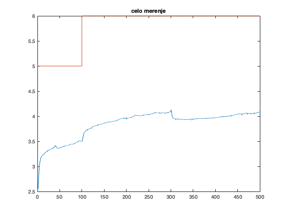
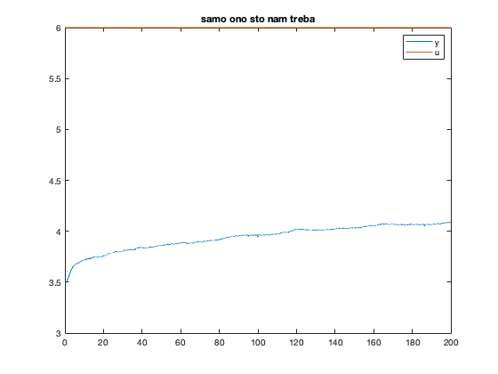
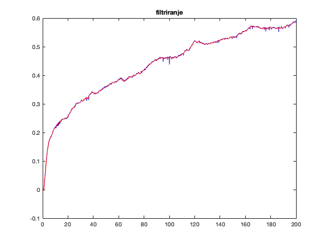
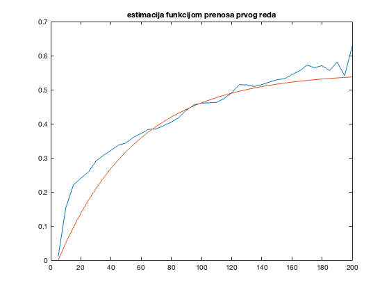

Contents
Zadatak 1
ucitavanje merenja
clear; close all; clc; Ts = 0.01; fs = 1/Ts; load('merenja/step_1.mat') % raspakivanje merenja ut = out.simout(:,1); yt = out.simout(:,2); up = out.simout(:,3); yp = out.simout(:,4); t_sim = out.tout(1:50001); figure plot(t_sim, yt); hold on plot(t_sim, ut); hold off title('celo merenje')
samo onaj deo koji nam treba
uzimamo deo kada se ukljucila step pobuda, a poremecaja nema y = yt(ut>5 & up == 2); u = ut(ut>5 & up == 2); t = t_sim(ut>5 & up ==2); iz nekog razloga ima 3 vrednosti sa istim t pa zato mora ovako
y = yt(10003:30002); u = ut(10003:30002); t = (1:20000)*Ts; figure plot(t, y) hold on plot(t, u); hold off title('samo ono sto nam treba') legend('y', 'u')
kasnjenje
% tau = 0.6 s yt1_bez_kasnjenja = y(60:end); t1_bez_kasnjenja = t(60:end); u_bez_kasnjenja = u(60:end); % figure % plot(t1_bez_kasnjenja, yt1_bez_kasnjenja)
y = yt1_bez_kasnjenja; t = t1_bez_kasnjenja; u = u_bez_kasnjenja;
filtriranje signala - pitanje da l je uopste bolje i da l je neophodno
deluje bolje? skidanje pocetne vrednosti
y_0 = y(1); y = y - y_0; % low pass filtar, frekvencija izabrana na oko, ispadne posle isto ko % fs_new, sto se i slaze :) Hd = designfilt('lowpassfir','FilterOrder',20,'CutoffFrequency',0.2, ... 'DesignMethod','window','Window',{@kaiser,3},'SampleRate',fs); yf = filter(Hd,y); % MA samo srednja vrednost 5 odbiraka % b = [0.2 0.2 0.2 0.2 0.2]; % % b = [0.8 0.2]; % % yf = fftfilt(Num, yt1); % yf = filter(b, 1, y); figure; plot(t, y, 'b'); hold all; plot(t, yf, 'r'); hold off; title('filtriranje'); y = yf;
G(s) = K/(T*s + 1) * e^(tau*s)
sa grafika
tau = 0.6; y_0 = mean(yt(t_sim>95 & t_sim <100)); y_end = mean(yt(t_sim>250 & t_sim < 270)); delta_y = y_end - y_0; delta_u = ut(t_sim == 250) - ut(t_sim == 95); K_est = delta_y/delta_u; y90 = delta_y*0.90; y10 = delta_y*0.1; ind90 = find(y > y90, 1, 'first'); ind10 = find(y< y10, 1, 'last'); t_rise = (ind90-ind10)*Ts; T_est = t_rise/2.197; save('data.m', 'T_est') % resample-ovanje Ts_new = floor(T_est/10); fs_new = 1/Ts_new; y = resample(y, 1, Ts_new/Ts); u = resample(u, 1, Ts_new/Ts); t = (1:length(u))*Ts_new; % G(s) s = tf('s'); G = K_est/(s*T_est + 1)*exp(-tau*s); % G = K_est/(s*T_est+1); u_sim = ones(length(u), 1); y_sim = lsim(G, u_sim', t); figure plot(t, y) hold on plot(t, y_sim) hold off title('estimacija funkcijom prenosa prvog reda')